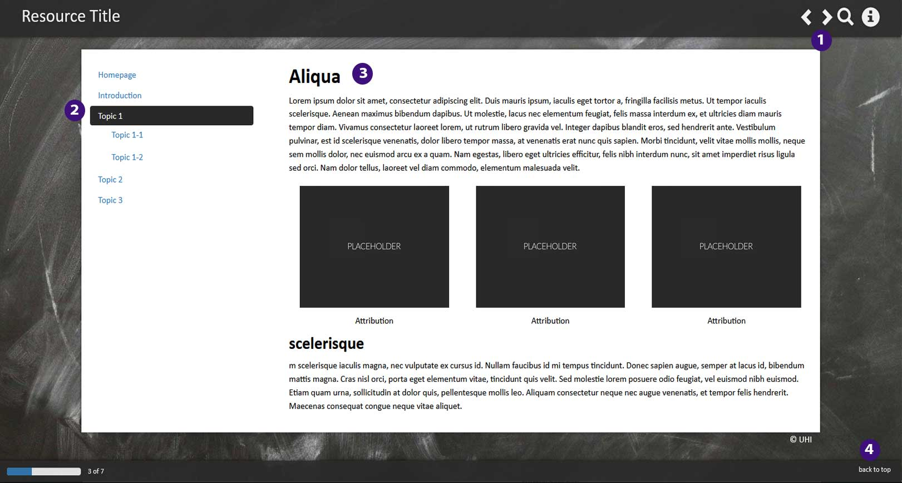
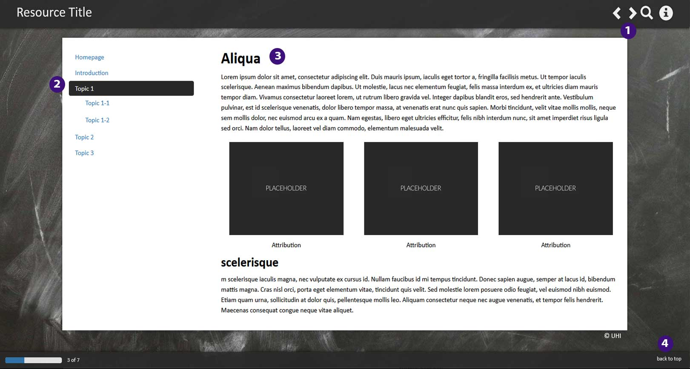

Homepage
Welcome to UHI Shetland's "Blue Sector" Virtual Reality (VR) course. These resources are designed for school pupils aged 12-18 who are interested in learning more about the aquaculture industry in Scotland.
Through the Meta Quest app developed in collaboration with the IMTEL Lab of NTNU, you will have the opportunity to engage with interactive scenarios which represent typical tasks routinely carried out in workplaces of the aquaculture and fish processing industry.

The app features:
- An introductory reception area to provide background information on the aquaculture industry in Scotland.
- A fish feeding station, where the user can observe salmon in three fish cages using a special underwater camera, adjust the feeding intensity to keep the fish well fed without wasting the food, and get feedback on the performance
- A fish welfare station, where the user can observe a typical procedure in aquaculture when a sample of fish is checked for diseases and injuries. The user can perform the check and get feedback on performance.
- A marine cage site, where the user can complete routine husbandry tasks such as repairing the fish cage, manually feeding the fish and discarding dead fish pumped from the cage.
- A laboratory, where the user measures and weighs a salmon, and calculates its condition factor. The user can also use a microscope to count plankton in a water sample and explore salmon anatomy.
- A fish processing facility, where the user can observe how the salmon is received, sorted, processed, packaged and shipped for delivery. The user can perform several typical tasks and get feedback on performance.
The course will be split into 3 modules, each focusing on 2 of the available workplaces. Each module is expected to take around 1-hour to complete.
The app provides a taste of what work in the aquaculture industry is like. The supporting resources allow for more in depth exploration of each workplace scenario with additional quizzes, questions, and activities to allow consolidation of the information learned.
As the course can be engaged with as both independent study or in a classroom context, there are several ways to make use of the supporting resources, please feel free to use them in whichever way best suits your purposes. They can be downloaded and printed in paper form or completed online.

These accompanying resources are aligned with the Scottish Curriculum for Excellence (CfE).
In a broad sense, engaging with the course materials will allow learners to develop the following skills:
- Curiosity and understanding of the environment and their place in the living, material and physical world. They will develop an understanding of the earth's resources and the need for the responsible use of them.
- Skills for learning, life and work by completing VR tasks relevant to the aquaculture industry. A foundation will be established for more advanced learning and future careers in this sector.
- An ability to express options and make decisions on social, moral, ethical, economic and environmental issues, based upon sound understanding. In particular, this will be achieved in relation to exploring the sustainability of the aquaculture industry and the efforts made to reduce its environmental impact.
- A grounding as a a scientifically-literate citizen with a lifelong interest in science.
The following experiences and outcomes will also be covered:
- Planet Earth: Through exploring interactions between Atlantic Salmon, parasites, and organisms such as plankton, learners will explore the diversity of living things and develop an understanding of how organisms are interrelated.
- Biological systems: By investigating salmon welfare and feeding practices they will develop an understanding of risk and impact of microorganisms in relation to health. They will also explore the use of technology in monitoring health and improving the quality of life of salmon.
- Topical science: By considering current issues of science relevant to the aquaculture industry, learners will develop their understanding of scientific concepts and their capacity to form informed social, moral and ethical views. They will be able to reflect upon and critically evaluate media portrayal of scientific findings.
In addition to the Scottish Curriculum, these materials fit within the framework of the United Nations' Sustainable Development Goals, and help learners to understand how the sciences play a vital role in finding solutions to real world issues and challenges such as protecting biodiversity, reducing marine pollution, and tackling climate change.
The UN sustainable development goals this course will cover include:
2. Zero Hunger, 4. Quality Education, 8. Decent Work and Economic Growth, 9. Industry, Innovation, and Infrastructure, 11. Sustainable Cities and Communities, 12. Responsible Consumption and Production, and 14. Life Below Water.
Lesson 1 - Reception and Feeding Station
In Lesson 1 you will develop an understanding of the importance of the aquaculture industry in Scotland and explore the nutritional benefits of seafood and the characteristics of Atlantic Salmon. This will be investigated in the context of their lifecycle and production cycle. This will be linked to the "Reception" scenario in the Blue Sector VR app.
You will also carry out remote feeding tasks from a salmon feeding station. You will learn more about the importance of ensuring all cages receive adequate feed whilst also reducing wastage from overfeeding.


Nutritional-benefits-of-seafood-quiz
Multiple Choice Quiz
1. How many portions of fish a week should a healthy, balanced diet ideally include?
2. What are fish and shellfish good sources of
end
formatting text ........


Atlantic Salmon Animation - NOAA Fisheries Video Gallery
Fill in the Blanks Activity - The Salmon Lifecycle in the Wild
Complete the sentences:
Stage A
1. Female salmon swimto lay their eggs in coldas their eggs,cannot survive in the salty and unprotected conditions of the. They are buried inand the flow of running water provides a source of.
Stage B
1. Juvenile salmononly have the physiological mechanisms needed for surviving in. However, asthey migrateto the estuary and ocean. They must therefore adapt theirfunction to cope with the salt-water conditions and develop.
Stage C
1. Most salmon spend the first part of their adult life inwaters, then migratewhere they spend from. They can travel up toa day in a large school and return toto breed.
Stage A
1.
2.
3.
4.
5.
6.
Stage B
7.
8.
9.
10.
11.
12.
Stage C
13.
14.
15.
16.
17.


Lesson 2- Fish Welfare Boat and Marine Cage Site
In lesson 2 you will learn to recognise normal behaviour and appearance in salmon and investigate common disease and parasites. In the "Welfare Boat" VR scenario you will carry out work in line with animal welfare regulations.

You will also carry out routine husbandry tasks relevant to salmon aquaculture in the "Marine cage site" VR scenario such as checking net integrity, transferring fish into the cage and measuring environmental parameters.
Lesson 3- Laboratory and Fish Processing
In this lesson you will carry out common laboratory tasks such as calculating the condition factor of the fish, and analysing water samples for plankton content. You will also get the chance to explore salmon anatomy further and dissect a fish.
In the fish processing scenario you will have the chance to bleed, grade and sort the fish in a factory setting in alignment with the health and safety standards of the industry.


What is Sustainability?
The United Nations defines sustainability as "meeting the needs of the present without compromising the ability of future generations to meet their own needs."
Threats of unsustainable aquaculture
Some threats of unsustainable aquaculture practices include:
- Uneaten fish food, waste chemicals and fish waste which can sink to the seafloor and cause pollution.
- Producing salmon feed from ingredients which come from unsustainable sources.
- The number of fish per cage (fish density) being too high which can increase spread of diseases and parasites.
- Escaped farmed fish spreading disease to wild fish.

Benefits of sustainable aquaculture
When the aquaculture industry follows best practice to promote sustainability the benefits include:
- Reducing the pressure on wild fish populations
- The growth of the industry to produce food in line with a growing world population
- Fish produced all year round which would not be possible with wild salmon.
 
